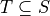
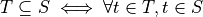
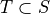
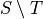

7. Set Theory¶
Modern mathematics is largely founded on set theory: in particular, on what is called Zermelo-Fraenkel set theory with the axiom of Choice, or ZFC. Every concept you have ever learned in mathematics can, in principle, be reduced to expresions involving sets. For example, every natural number can be represented as a set: zero as the empty set, {}; one as the set containing the empty set, {{}}; two as the set that contains that set, {{{}}}; ad infinitum.
Set theory includes the treatment of sets, including the special cases of relations (sets of tuples), functions (single-valued relations), sequences (functions from natural numbers to elements), and other such concepts. ZFC is a widely accepted formal foundation for modern mathematics: a set of axioms that describe properties of sets, from which all the rest of mathematics can be deduced.
7.1. Naive Set Theory¶
So what is a set? A naive definition (which will actually be good enough for our purposes and for most of practical computer science) is that a set is just an unordered collection of elements. In principle, these elements are themselves reducible to sets but we don’t need to think in such reductionist terms. We can think about a set of natural numbers, for example, without having to think of each number as itself being some weird kind of set.
In practice, we just think sets as unordered collections of elements of some kind, where any given element is either in or not in any given set. An object can be a member of many different sets, but can only by in any give set zero or one times. Membership is binary. So, for example, when we combine (take the union of) two sets, each of which contains some common element, the resulting combined set will have that element as a member, but it won’t have it twice.
This chapter introduces naive, which is to say intuitive and practical, set theory. It does not cover axiomatic set theory, in which every concept is ultimately reduced to a set of logical axioms that define what precisely it means to be a set and what operations can be use to manipulate sets.
7.2. Overly Naive Set Theory¶
Before we go on, however, we review a bit of history to understand that an overly naive view of sets can lead to logical contradictions that make such a theory useless as a foundation for mathematics.
One of the founders of modern logic, Gotlob Frege, had as his central aim to establish logical foundations for all of mathematics: to show that everything could be reduced to a set of axioms, or propositions accepted without question, from which all other mathematical truths could be deduced. The concept of a set was central to his effort. His logic therefore allowed one to define sets as collections of elements that satisfy given propositions, and to talk about whether any given element is in a particular set of not. Frege’s notion of sets, in turn, traced back to the work of Georg Cantor.
But then, boom! In 1903, the British analytical philosopher, Bertrand Russell, published a paper presenting a terrible paradox in Frege’s conception. Russell showed that a logic involving naive set theory would be inconsistent (self-contradicting) and there useless as a foundation for mathematics.
To see the problem, one consider the set, S, of all sets that do not
contain themselves. In set comprehension notation, we would write
this set as  That is, S is the
set of elements, a, each a set, such that a is not a member of
itself.
That is, S is the
set of elements, a, each a set, such that a is not a member of
itself.
Now ask the decisive question: Does S contain itself?
Let’s adopt a notation, C(S), to represent the proposition that S
contains itself. Now suppose that C(S) is true, i.e., that S does
contain itself. In this case, S, being a set that contains itself,
cannot be a member of S, because we just defined S to be the set
of sets that do not contain themselves. So, the assumption that S
contains itself leads to the conclusion that S does not contain
itself. In logical terms,  This is
a contradiction and thus a logical impossibility.
This is
a contradiction and thus a logical impossibility.
Now suppose S does not contain itself:  . Being
such a set, and given that S is the set of sets that do not contain
themselves, it must now be in S. So
. Being
such a set, and given that S is the set of sets that do not contain
themselves, it must now be in S. So  The assumption that it does not contain itself leads right
back to the conclusion that it does contain itself. Either the set
does or does not contain itself, but assuming either case leads to a
contradictory conclusion. All is lost!
The assumption that it does not contain itself leads right
back to the conclusion that it does contain itself. Either the set
does or does not contain itself, but assuming either case leads to a
contradictory conclusion. All is lost!
That such an internal self-contradiction can arise in such a simple way (or at all) is a complete disaster for any logic. The whole point of a logic is that it gives one a way to reason that is sound, which means that from true premises one can never reach a contradictory conclusion. If something that is impossible can be proved to be true in a given theory, then anything at all can be proved to be true, and the whole notion of truth just collapses into meaninglessness. As soon as Frege saw Russell’s Paradox, he knew that that was game over for his profound attempt to base mathematics on a logic grounded in his (Cantor’s) naive notion of sets.
Two solutions were eventually devised. Russell introduced a notion of types, as opposed to sets, per se, as a foundation for mathematics. The basic idea is that one can have elements of a certain type; then sets of elements of that type, forming a new type; then sets of sets elements of that type, forming yet another type; but one cannot even talk about a set containing (or not containing) itself, because sets can only contain elements of types lower in the type hierarchy.
The concept of types developed by Russell lead indirectly to modern type theory, which remains an area of very active exploration in both computer science and pure mathematics. Type theory is being explored as an alternative foundation for mathematics, and is at the very heart of a great deal of work going on in the areas of programming language design and formal software specification and verification.
On the other hand, Zermelo repaired the paradox by adjusting some of the axioms of set theory, to arrive at the starting point of what has become ZFC. When we work in set theory today, whether with a naive perspective or not, we are usually working in a set theory the logical basic of which is ZFC.
7.3. Sets¶
For our purposes, the naive notion of sets will be good enough. We will take a set to be an unordered finite or infinite collection of elements. An element is either in or not in a set, and can be in a set at most once. In this chapter, we will not encounter any of the bizarre issues that Russell and others had to consider at the start of the 20th century.
What we will find is that set-theoretical thinking is an incredibly powerful intellectual tool. It’s at the heart of program specification and verification, algorithm design and analysis, and theory of computing, among many other areas in computer science. Moreover, Dafny makes set theory not only fun but executable. The logic of Dafny, for writing assertions, pre- and post-conditions, and invariants is set theory, a first-order logic with sets and set-related operations as built-in concepts.
7.4. Set Theory Notations¶
7.4.1. Display notation¶
In everyday mathematical writing, and in Dafny, we denote small sets by
listing the elements of the set within curly brace. If S is the set
containing the numbers, one, two, and three, for example, we can write
S as 
In Dafny, we would write almost the same thing.
var S:set<int> := { 1, 2, 3 };
This code introduces the variable, S, declares that its type is
finite set of integer (iset<T> being the type of infinite sets
of elements of tyep T), and assigns to S the set value,  Because the value on the right side of the assignment
operator, is evidently a set of integers, Dafny will infer the type of
S, and the explicit type declaration can therefore be omitted.
Because the value on the right side of the assignment
operator, is evidently a set of integers, Dafny will infer the type of
S, and the explicit type declaration can therefore be omitted.
var S := { 1, 2, 3 };
When a set is finite but too large to write down easily as a list of
elements, but when it has a regular structure, mathematicians often
denote such a set using an elipsis. For example, a set, S, of even
natural numbers from zero to one hundred could be written like this:
 This expression is a kind of
quasi-formal mathematics. It’s mostly formal but leaves details that
an educated person should be able to infer to the human reader.
This expression is a kind of
quasi-formal mathematics. It’s mostly formal but leaves details that
an educated person should be able to infer to the human reader.
It is not (currently) possible to write such expressions in Dafny. Dafny does not try to fill in missing details in specifications. A system that does do such a thing might make a good research project. On the other hand, ordinary mathematical writing as well as Dafny do have ways to precisely specify sets, including even infinite sets, in very concise ways, using what is called set comprehension or set builder notation.
7.4.2. Set comprehension notation¶
Take the example of the set, S, of even numbers from zero to one
hundred, inclusive. We can denote this set precisely in mathematical
writing as  Let’s pull this expression apart.
Let’s pull this expression apart.
The set expression (to the right of the first equals sign) can be read in three parts. The vertical bar is read such that. To the left of the bar is an expression identifying the set from which the elements of this set are drawn, and a name is given to an arbitrary element of this source set. So here we can say that S is a set each element n of which is a natural number. A name, here n, for an arbitrary element is given for two purposes. First it desribes the form of elements in the set being built: here just integers. Second, the name can then be used in writing a condition that must be true of each such element. That expression is written to the right of the vertical bar.
Here the condition is that each such element, n must be greater than or equal to zero, less than or equal to one hundred, and even, in that the remainder must be zero when n is divided by 2. The overall set comprehension expression is thus read literally as, S is the set of integers, n, such that n is greater than or equal to zero, n is less than or equal to 100, and n evenly divisible by 2. A more fluent reading would simply be S is the set of even integers between zero and one hundred inclusive.
Dafny supports set comprehension notations. This same set would be written as follows (we assume that the type of S has already been declared to be set<int>):
S := set s: int | 0 <= s <= 100;
Another way to define the same set in ordinary mathematical writing would use a slightly richer form of set comprehension notation. In particular, we can define the same set as the set of values of the expression 2*n for n is in the range zero to fifty, inclusive. Where it’s readily inferred, mathematicians will usually also leave out explicit type information. `S = { 2 * n | 0 <= n <= 50 }. In this expression it’s inferred that n ranges over all the natural numbers, these values are filtered by the expression on the right, and these filtered values are then fed through the expression on the left of the bar to produce the elements of the intended set.
Dafny also supports set comprehension notation in this style. To define this very same set in Dafny we could also write this:
S := set s: int | 0 <= s <= 50 :: 2 * s;
This command assigns to S a set of values, 2 * s,, where s ranges over the integers and satisfies the predicate (or filter) 0 <= s <= 50.
The collection of values from which element are drawn to be
build into a new set need not just be a built-in type but can
be another programmer-defined set. Given that S is the set
of even numbers from zero to one hundred, we can define the
subset of S of elements that are less than 25 by writing
a richer set comprehension. In pure mathematical writing, we
could write  That is,
T is the set of elements that are in S and less than 25.
The Dafny notation is a little different, but not too much:
That is,
T is the set of elements that are in S and less than 25.
The Dafny notation is a little different, but not too much:
var T := set t | t in S && t < 25;
This Dafny code defines T to be the set (of integers, but note that we let Dafny infer the type of t in this case), such that t is in the set S (that we just defined) and t is also less than 25.
As a final example, let’s suppose that we want to define the set of
all ordered pairs whose first elements are from S and whose second
elements are from T, as we’ve defined them here. For example, the
pair (76,24) would be in this set, but not (24 76). In ordinary
mathematical writing, this would be  This set is, as we’ll learn more about shortly, called the
product set of the sets, S and T.
This set is, as we’ll learn more about shortly, called the
product set of the sets, S and T.
In Danfy, this would be written like this:
var Q := set s, t | s in S && t in T :: (s, t);
This code assigns to the new variable, Q, a set formed by taking elements, s and t,, such that s is in S and t is in T, and forming the elements of the new set as tuples, (s, t). This is a far easier way to write code for a product set than by explicit iteration over the sets S and T!
In Dafny, the way to extract an element of a tuple, t, of arity, n, is by writing t.n, where n is a natural number in the range 0 up to n - 1. So, for example, (3, 4).1 evaluates to 4. It’s not a notation that is common to many programming languages. One can think of it as a kind of subscripting, but using a different notation than the usual square bracket subscripting used with sequences.
7.5. Set Operations¶
7.5.1. Cardinality¶
By the cardinality of a set, S, we mean the number of elements
in S. When S is finite, the cardinality of S is a natural number.
The cardinarily of the empty set is zero, for example, because it has
no (zero) elements. In ordinary mathematics, if S is a finite set,
then its cardinality is denoted  . With S defined as in
the preceding section, the cardinality of S is 50. (There are
50 numbers between 0 and 49, inclusive.)
. With S defined as in
the preceding section, the cardinality of S is 50. (There are
50 numbers between 0 and 49, inclusive.)
The Dafny notation for set cardinality is just the same. The following code will print the cardinality of S, namely 50, for example.
print |S|;
If a set is infinite in size, as for example is the set of natural numbers, the cardinality of the set is obviously not any natural number. One has entered the realm of transfinite numbers. We will discuss transfinite numbers later in this course. In Dafny, as you might expect, the cardinality operator is not defined for infinite sets (of type iset<T>).
7.5.2. Equality¶
Two sets are considered equal if and only if they contain exactly the same elements. To assert that sets S and T are equal in mathematical writing, we would write S = T. In Dafny, such an assertion would be written, S == T.
7.5.3. Subset¶
A set, T, can be said to be a subset of a set S if and only if every element in T is also in S. In this case, mathematicians write . In mathematical logic notation, we would write, . That is, T is a subset of S if and only if every element in T is also in S.
A set T, is said to be a proper subset of S, if T is a subset of S but T is not equal to S. In our example, T (the set of even natural numbers less than 25) is a proper subset of S (the set of even natural numbers less than or equal to 100).
This is written in mathematics as . In other words,
every element of T is in S but there is at least one element of
S that is not in T. Mathematically,  .
.
The backwards E is the existential quantifier in first-order logic, and is read as, and means, there exists. So this expression says that T is a proper subset of S if every t in T is in S but there is at least one s in S that is not in T. That the proper subset operator contains an implicit existential operator poses some real problems for verification.
Without getting into details, when one asserts in Dafny that T is a proper subset of S, Dafny needs to find an element of S that is not in T, and in general, it needs a lot of help to do that. The details are out of scope at this point, but one should be aware of the difficulty.
In Dafny, one uses the usual arithmetic less and less than or equal operator symbols, < and <=, to assert proper subset and subset relationships, respectively. The first two of the following assertions are thus both true in Dafny, but the third is not. That said, limitations in the Dafny verifier make it hard for Dafny to see the truth of such assertions without help. We will not discuss how to provide such help at this point.
assert T < S;
assert T <= S;
assert S <= T;
We note every set is a subset, but not a proper subset, of itself. It’s also the case that the empty set is a subset of every set, in that all elements in the empty set are in any other set, because there are none. In logic-speak, we’d say a universally quantified proposition over an empty set is trivially true.
If we reverse the operator, we get the notion of supersets and proper
supersets. If T is a subset of S, then S is a superset of T,
written,  . If T is a proper subset of S then
S is a proper superset of T, written
. If T is a proper subset of S then
S is a proper superset of T, written  . In
Dafny, the greater than and greater than or equals operator are used
to denote proper superset and superset relationships between sets.
So, for example, S >= T is the assertion that S is a superset of
T. Note that every set is a superset of itself, but never a proper
superset of itself, and every set is a superset of the empty set.
. In
Dafny, the greater than and greater than or equals operator are used
to denote proper superset and superset relationships between sets.
So, for example, S >= T is the assertion that S is a superset of
T. Note that every set is a superset of itself, but never a proper
superset of itself, and every set is a superset of the empty set.
7.5.4. Intersection¶
The intersection,  , of two sets, S and T, is the
set of elements that are in both S and T. Mathematically speaking,
, of two sets, S and T, is the
set of elements that are in both S and T. Mathematically speaking,
 .
.
In Dafny, the * operator is used for set intersection. The intersection of S and T is thus written S * T. For example, the command Q := S * T assigns the intersection of S and T as the new value of Q.
7.5.5. Union¶
The union,  , of two sets, S and T, is the set of
elements that are in either (including both) S and T. That is,
, of two sets, S and T, is the set of
elements that are in either (including both) S and T. That is,
 .
.
In Dafny, the + operator is used for set union. The union of S and T is thus written S + T. For example, the command V := S + T assigns the union of S and T as the new value of V.
7.5.6. Difference¶
The difference,  (S minus T), of sets S and
T is the set of elements in S that are not also in T. Thus,
 . In Dafny, the
minus sign is used to denote set difference, as in the expression,
S - T. Operators in Dafny can be applied to sets to make up more
complex expressions. So, for example, |S-T| denotes the cardinality
of S-T.
. In Dafny, the
minus sign is used to denote set difference, as in the expression,
S - T. Operators in Dafny can be applied to sets to make up more
complex expressions. So, for example, |S-T| denotes the cardinality
of S-T.
7.5.7. Product Set¶
The product set,  , is the set of all the ordered
pairs, (s,t), that can be formed by taking one element, s, from
S, and one element, t, from T. That is,
, is the set of all the ordered
pairs, (s,t), that can be formed by taking one element, s, from
S, and one element, t, from T. That is,  . The cardinality of a product set
is the product of the cardinalities of the individual sets.
. The cardinality of a product set
is the product of the cardinalities of the individual sets.
There is no product set operator, per se, in Dafny, but given sets, S and T a product set can easily be expressed using Dafny’s set comprehension notation: set s, t | s in S && t in T :: (s,t). The keyword, set, is followed by the names of the variables that will be used to form the set comprehension expression, followed by a colon, followed by an assertion that selects the values of s and t that will be included in the result, followed by a double colon, and then, finally an expression using the local variables that states how each value of the resulting set will be formed.
7.5.8. Power Set¶
The power set of a set, S, denoted  is the
set of all subsets of S. If S = {1, 2 }, for example, the powerset
of S is the set containing the proper and improper subsets of S,
namely {}, { 1 }, { 2 }, and { 1, 2}.
is the
set of all subsets of S. If S = {1, 2 }, for example, the powerset
of S is the set containing the proper and improper subsets of S,
namely {}, { 1 }, { 2 }, and { 1, 2}.
The powerset of a set with n element will have  elements.
Consider the powerset of the empty set. The only subset of the empty
set is the empty set itself, so the powerset of the empty set is the
set containing only the empty set. This set has just 1 element. It’s
cardinality thus satisfies the rule, as 2 to the power, zero (the
number of elements in the empty set), is 1.
elements.
Consider the powerset of the empty set. The only subset of the empty
set is the empty set itself, so the powerset of the empty set is the
set containing only the empty set. This set has just 1 element. It’s
cardinality thus satisfies the rule, as 2 to the power, zero (the
number of elements in the empty set), is 1.
Now suppose that for every set, S, with cardinality n, the cardinality of its powerset is 2 to the n. Consider a set, S’, of cardinality one bigger than that of S. Its powerset contains every set in the powerset of S, plus every set in that set with the new element included, and that’s all the element it includes.
The number of sets in the powerset of S’ is thus double the number of sets in the powerset of S. Given that the cardinality of the powerset of S is 2 to the n, the cardinality of S’, being twice that number, is 2 to the n + 1.
Now because the rule holds for sets of size zero, and whenver it holds
for sets of size n it also holds for sets of size n + 1, it must
hold for sets of every (finite) size. So what we have is an informal
proof by induction of a theorem:  .
.
In Dafny, there is no explicit powerset operator, one that would take
a set and returning its powerset, but the concept can be expressed in
an elegant form using a set comprehension. The solution is simply to
say the set of all sets that are subsets of a given set, *. In pure
mathematical notation this would be  In
Dafny it’s basically the same expression. The follwing three-line
program computes and prints out the powerset of S = { 1, 2, 3 }.
The key expression is to the right of the assignment operator on the
second line.
In
Dafny it’s basically the same expression. The follwing three-line
program computes and prints out the powerset of S = { 1, 2, 3 }.
The key expression is to the right of the assignment operator on the
second line.
var S := { 1, 2, 3 };
var P := set R | R <= S;
print P;
Exercise: Write a pure function that when given a value of type set<T> returns its powerset. The function will have to be polymorphic. Call it powerset<T>.
7.6. Tuples¶
A tuple is an ordered collection of elements. The type of elements in a tuple need not all be be the same. The number of elements in a tuple is called its arity. Ordered pairs are tuples of arity, 2, for example. A tuple of arity 3 can be called a (an ordered) triple. A tuple of a larger arity, n, is called an n-tuple. The tuple, (7, X, “house”, square_func), for example, is a 4-tuple.
As is evident in this example, the elements of a tuple are in general not of the same type, or drawn from the same sets. Here, the first element is an integer; the second, a variable;, the third, a string; and last, a function.
An n-tuples should be understood as values taken from a product of
n sets. If S and T are our sets of even numbers between zero
and one hundred, and zero and twenty four, for example, then the
ordered pair, (60,24) is an element of the product set  . The preceding 4-tuple would have come from a product of
four sets: one of integers, one of variables, one of strings, and one
of functions.
. The preceding 4-tuple would have come from a product of
four sets: one of integers, one of variables, one of strings, and one
of functions.
The type of a tuple is the tuple of the types of its elements. In
mathematical writing, we’d say that the tuple, (-3,4) is al element
of the set  and if asked about
its type, most mathematicians would say pair of integers. In Dafny,
where types are more explicit than they usually are in quasi-formal
mathematical discourse, the type of this tuple is (int, int). In
general, in both math and in Dafny, in particular, the type of a tuple
in a set product, ::S_1 times S_2 times ldots time S_n, where
the types of these sets are
and if asked about
its type, most mathematicians would say pair of integers. In Dafny,
where types are more explicit than they usually are in quasi-formal
mathematical discourse, the type of this tuple is (int, int). In
general, in both math and in Dafny, in particular, the type of a tuple
in a set product, ::S_1 times S_2 times ldots time S_n, where
the types of these sets are  is
is  .
.
The elements of a tuple are sometimes called fields of that tuple. Given an *n-tuple, t, we are often interested in working with the value of one of its fields. We thus need a function for projecting the value of a field out of a tuple. We actually think of an n-tuple as coming with n projection functions, one for each field.
Projection functions are usually written using the Greek letter,
::pi, with a natural number subscript indicating which field a
given projection function ” projects”. Given a 4-tuple, t = (7, X,
“house”, square_func), we would have math::pi_0(t) = 7 and

The type of a projection funcion is function from tuple type to field
type. In general, because tuples have fields of different types, they
will also have projection functions of different types. For example,
 here is of type (in Dafny)
here is of type (in Dafny)  while
while  is of
type
is of
type 
In Dafny, tuples are written as they are in mathematics, as lists of field values separated by commas and enclosed in parentheses. For example t := (1, “hello”, [1,2,3])” assigns to *t a 3-tuple whose first field has the value, 1 (of type int); whose second field has the value, “hello”, a string; and whose third element is the list of integers, [2, 4, 6].
Projection in Dafny is accomplished using the tuple subscripting (as opposed to array or list subscripting) operation. Tuple subscripting is done by putting a dot (period) followed by an index after the tuple expression. Here’s a little Dafny code to illustrate. It defines t to be the triple, (7, ‘X’, “hello”) (of type (int, char, string)), and then usses the .0 and .2 projection functions to project the first and third elements of the tuple, which it prints. To make the type of the tuple explicit, the final line of code declare t’ to be the same tuple value, but this time explicitly declares its type.
var t := (7, 'X', "hello");
print t.0;
print t.2;
var t': (int, char, string) := (7, 'X', "hello");
While all of this might seem a little abstract, it’s actually simple and very useful. Any table of data, such as a table with columns that hold names, birthdays, and social security numbers, represents data in a product set. Each row is a tuple. The columns correspond to the sets from which the field values are drawn. One set is a set of names; the second, a set birthdays; the third, a set of social security numbers. Each row is just a particular tuple in product of these three sets, and the table as a whole is what we call a relation. If you have heard of a relational database, you now know what kind of data such a system handles: tables, i.e., relations.